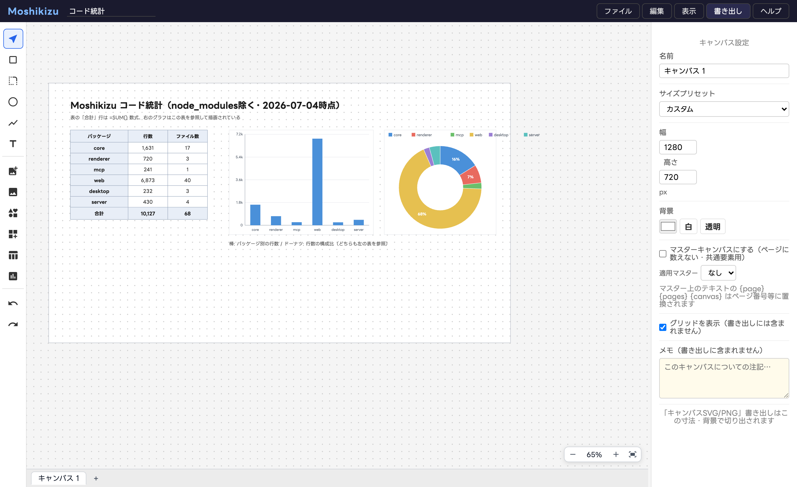

機能ガイド¶
キャンバス（ページ）¶
画面下のタブでキャンバスを切り替えます。＋で追加、ダブルクリックで名前変更、 ドラッグで並べ替え（PDF のページ順になります）。 何も選択していないときの右パネルがキャンバス設定です（寸法プリセット・背景色/透明・グリッド表示）。
マスターキャンバス¶
キャンバス設定の「マスターキャンバスにする」でマスター化（タブに Ⓜ 表示）。
他のキャンバスは「適用マスター」を選ぶと、マスターの図形が背面に共通表示されます。
マスター上のテキストに {page} {pages} {canvas} と書くと、ページ番号・総ページ数・
キャンバス名に置換されます（ノンブルは {page} / {pages}）。
PDF 書き出し¶
「書き出し > PDF」で複数ページ PDF を作成します。ページ順はタブ順（マスター除く）、
範囲指定は 1,3,4-5 形式です。
表と数式・グラフ¶

ツールバーの表アイコンで挿入し、セルをダブルクリックして編集します。
- セル先頭に
=で数式: 四則演算・セル参照（A1）・範囲（A1:B3）・SUM/AVG - 数値書式（カンマ・小数点桁・%）はセル単位で設定可能（MCP/ファイル編集から）
- プロパティパネルで行列の追加/削除・行高/列幅の統一・罫線・ヘッダー/フッター
グラフはツールバーのグラフアイコンで挿入し、表を参照して描画されます （棒・折れ線・円・ドーナツ・レーダー・散布図・ウォーターフォール）。 表を書き換えるとグラフも追従します。別キャンバスの表も参照できます。
画像と非破壊トリミング¶
画像（PNG/JPEG等）はドキュメントに埋め込まれます。ダブルクリックでトリミングモードに 入り、枠で範囲調整・窓内ドラッグで画像をずらせます。元データは保持され、何度でも やり直せます。コーナーリサイズは縦横比を維持します。
アイコンとアセット¶
- アイコンライブラリ: Iconify のオープンソースアイコンを検索してクリック配置。 ☆でマイライブラリに保存、自分の SVG も登録できます
- アセットライブラリ: 図形の組み合わせを部品として登録 → 配置はインスタンス。 同名で再登録するとマスター更新となり全インスタンスに反映。インスタンスごとに テキストだけ差し替えられます（プレースホルダー）
テーマとフォント¶
環境設定でカラーパレット・フォント・線幅をまとめて「テーマ」として保存・適用できます。
.drawtheme.json でエクスポート/インポートでき、サーバー版ではチーム共有も可能です。
フォントは Google Fonts から選択（日本語24候補+任意指定）。書き出し PNG/PDF には
使用文字分だけサブセット埋め込みされます。
主なショートカット¶
ヘルプ > ショートカット一覧 に全リストがあります。 ⌘S 保存 / ⌘F 検索置換（正規表現対応）/ ⌘G グループ化 / ⌘]・⌘[ 重なり順 / ⌘+・⌘−・⌘0・⌘1 ズーム / Space+ドラッグ パン / Alt+ドラッグ 複製 / 矢印キー 移動